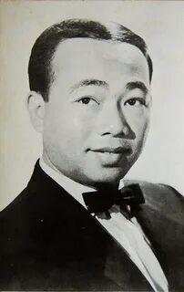

 Traditional Cambodian music dates back as far as the Khmer Empire.[260] Royal dances like the Apsara Dance are icons of the Cambodian culture as are the Mahori ensembles that accompany them. More rural forms of music include Chapei and Ayai. The former is popular among the older generation and is most often a solo performance of a man plucking a Cambodian guitar (chapei) in between a cappella verses. The lyrics usually have moral or religious theme. A Yai can be performed solo or by a man and woman and is often comedic in nature. It is a form of lyrical poetry, often full of double entendres, that can be either scripted or completely impromptu and ad-libbed. When sung by a duo, the man and women take turns, "answering" the other's verse or posing riddles for the other to solve, with short instrumental breaks in between verses. Pleng kaah (lit. "wedding music") is a set of traditional music and songs played both for entertainment and as accompaniment for the various ceremonial parts of a traditional, days-long Khmer wedding.